Rounds Codex · anatomy label corrections
Every correction I have measured, with the file, the pixel to erase, the pixel to draw to, and what is under each. Grouped by how hard the Photoshop job is, not by how bad the error is — so the top of this document is where to start.
Read the two shortcuts in section 2 before you open anything. On about a third of these pages the correct fix is to move the label text, not the leader line — which is a clean cut-and-paste on flat background instead of repainting over illustration. That converts the hardest class of defect into the easiest.
These are flat JPEGs. Production's fix is to re-render the page from their source scene, which keeps every other pixel intact. Your fix is to repaint the shipped JPEG. If production later re-renders a page you have edited, your work is silently overwritten. So pick a lane per page and tell them: either "we've fixed these ourselves, skip them" or "leave these to you". Doing both is the one outcome that wastes the effort.
My suggestion: take groups A and B yourself (short, self-contained, and they are the ones production is most likely to get wrong a second time), and leave group C and everything in group D to them.
All paths are relative to the root of the private app repo (rounds-codex-app). Most galleries live under assets/<id>/<id>-02.jpg; three of the pages here sit at the repo root instead, and those three are also the ones that ship undersized:
| Gallery | File | Page size |
|---|---|---|
| most galleries | assets/<id>/<id>-02.jpg | 1024 × 1536 |
| tb | tb-02.jpg | 800 × 1200 |
| pneumothorax | pneumothorax-02.jpg | 800 × 1200 |
| hypothyroid | hypothyroid-02.jpg | 800 × 1200 |
Every coordinate in this document is in the page's own pixels, origin top-left, which is what Photoshop's Info panel shows. For the three 800×1200 pages, multiply by 1.28 if you are working from a re-exported 1024×1536 file.
| # | What | Why |
|---|---|---|
| 1 | Save as JPEG, quality 10–12, same filename, same dimensions | The app and the service worker key off the path. Do not rename, do not resize. |
| 2 | Regenerate the thumbnail — gthumbs/<id>-02.jpg, 320 px wide, quality 82 | The gallery grid reads the thumb, not the page. An unregenerated thumb shows the old artwork on the card. |
| 3 | Rebuild the gallery PDF — scripts/rebuild_gallery_pdf.py <root> <id> | This is the one that has already bitten us. The download PDF is a build artifact generated once. Four galleries shipped for months with the old logo in the PDF and the new one in the viewer, because nothing regenerated the PDF. Send me the edited pages and I will run steps 2 and 3. |
Then python3 scripts/verify_gallery_pdfs.py <root> checks every page of every gallery PDF against the page the app serves — it will catch it if step 3 was missed.
Where two labels have landed on each other's structure, both leaders are already correct in the sense that each ends on a real structure that the other label names. So the fix is to exchange the two pieces of label text and leave every line untouched.
Label text sits on flat dark panel background. Lasso, cut, paste, nudge into place, heal the two vacated rectangles. No painting over illustration at all.
| Page | Swap these two labels | Note |
|---|---|---|
| cellulitis p2 | Artery ↔ Vein | Single words, stacked one above the other in the right-hand column. The cleanest one on this list — do it first. |
| ckd p2 | Bowman's capsule ↔ Glomerulus | RENAL CORPUSCLE panel. A pure swap. |
| cdiff p2 | Normal mucus layer ↔ Intact epithelium | NORMAL COLONIC MUCOSA panel. A pure swap. |
| osteoporosis p2 | Tibia ↔ Fibula | Single words, stacked. But see group 5 — confirm which bone is which on the lateral skeleton first, and note that on the anterior skeleton both dots are on one bone, so a text swap alone will not finish that half. |
Three pages have a column of labels where every label has taken the next one's structure. Rather than moving several leaders, move the text down (or up) one slot in the column and fix only the one label at the end of the chain that has nowhere to go.
| Page | The chain | What is left over |
|---|---|---|
| labor p2 | Sacrum → a lumbar vertebra · Rectum → the sacrum · Vagina → the rectum | Shift the three right-hand labels up one slot, then give the vagina its own leader. Erase the topmost dot at (732,341). |
| withdrawal p2 | HYPOTHALAMUS → pink · AMYGDALA → green · LOCUS COERULEUS → orange · CEREBELLUM → orange · BRAINSTEM → nothing | Shifting the text fixes three of five. Two leaders still need moving: one onto the blue blob at (437,495) and one onto the mauve cerebellum at (505,530), neither of which currently has any leader. |
| cdiff p2 | Sigmoid colon → the descending limb · Rectum → haustrated bowel · Anal canal → sigmoid | Shift the three down one slot. Descending colon at (462,348) is correct and stays. |
One caution on both shortcuts. Check the label's own ink colour before you move it. On several of these pages the label is printed in the colour of the structure it names — withdrawal p2 is entirely built that way — so moving the text without recolouring it would leave the colour wrong even though the words are right.
Where you do have to move a line, this is what I learned doing about a dozen of these with scripts. Photoshop's healing brush will do most of it better than my code did, but the choice of donor is the whole job.
| What is under the line | How to erase it |
|---|---|
| Flat black background | Anything works. Spot healing brush, one pass. |
| Flat or smoothly shaded tissue | Healing brush with a donor 20–30 px away, perpendicular to the stroke. |
| Textured tissue (gyri, trabeculae, folia) | Clone stamp, donor parallel to the stroke so the texture direction survives. Sample often; a single donor smears. |
| Banded or striated tissue (adrenal cortex, muscle, arbor vitae) | Clone along the band, not across it. Find the grain by eye first — on addisons p2 the leaders ran parallel to the striations, so the donor had to be perpendicular. The rule is "clone along the texture's grain", and the grain sometimes runs with the stroke. |
| A strong edge crosses the stroke — an organ boundary, a vessel wall, a bone cortex | Do not erase it. Any donor reconstructs one side and destroys the other. I abandoned two fixes for exactly this. Leave those for a re-render. |
Erase the whole polyline, not the straight line between its ends. Several of these leaders bend. On pancreatitis p2 I masked a straight line between the endpoints and left a white diagonal across the aorta — the bounding box and the pixel count both looked right, and only a side-by-side caught it.
Check your work at 100%, then at 25%. A repaint that is invisible at 100% often shows as a smudge at thumbnail size, which is where most readers see the page first.
Start here. Each is a single terminator on flat or dark ground, moving under about 40 px. The red ring is what to erase; the green ring is where to put it.
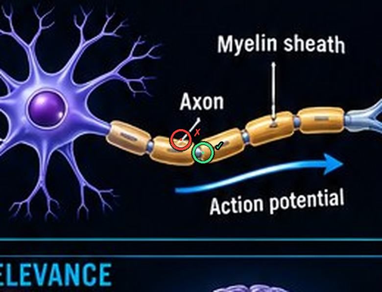
1
✗ ERASE (253,1143)
a tan myelin internode — the same kind of segment the “Myelin sheath” label points at
✓ DRAW AT (268,1152)
a node of Ranvier, the blue-grey constriction between internodes
Nodes also at (300,1145) and (337,1130) if a different one suits the leader better.
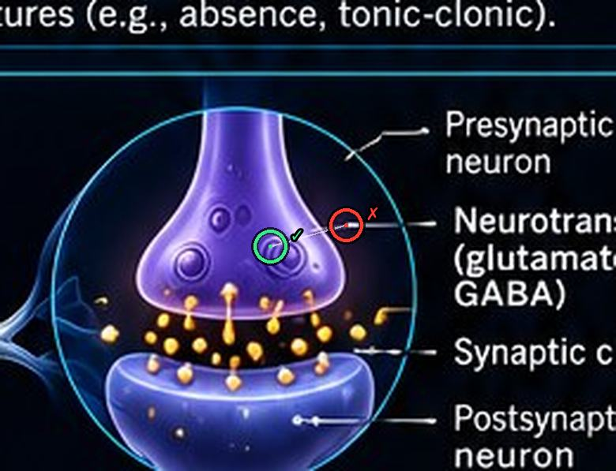
2
✗ ERASE (527,1080)
the presynaptic bouton’s rim — no vesicle or particle within 25 px
✓ DRAW AT (495,1089)
a vesicle circle inside the bouton
Other vesicles at (473,1074) and (459,1092). Prefer a vesicle over the cleft — “Synaptic cleft” already points into the particle field.
3
✗ ERASE (493,424)
the dark gap just below the sphere
✓ DRAW AT (492,401)
the blue-violet sphere, 23 px higher
Old dot is on near-black; erase is a one-pass heal.
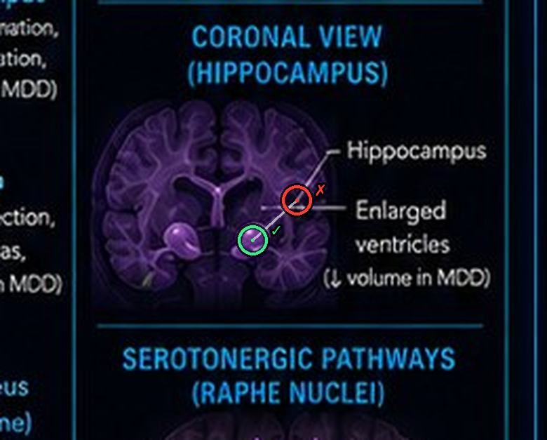
4
✗ ERASE (905,415)
dark cortex / white matter
✓ DRAW AT (884,434)
the bright purple hippocampus
The only bright object in that neighbourhood.
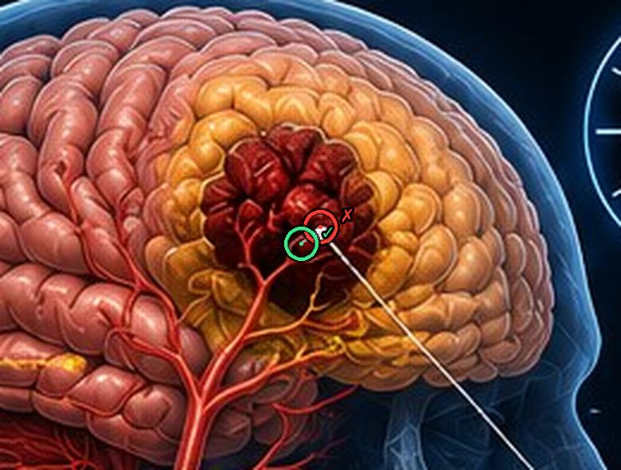
5
✗ ERASE (556,368)
inside the dark red infarct core — brain tissue
✓ DRAW AT (548,375)
the artery, 8 px away
The magnifier inset shows a clot inside a vessel lumen, so the anchor belongs on the vessel.
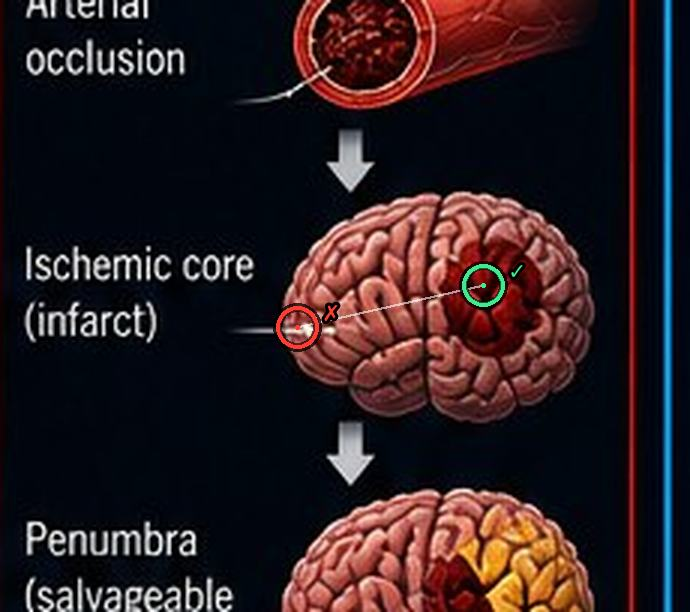
6
✗ ERASE (893,631)
the plain pink LEFT hemisphere of the icon
✓ DRAW AT (955,617)
the dark red core on the right hemisphere
The icon has exactly one coloured region — no ambiguity.
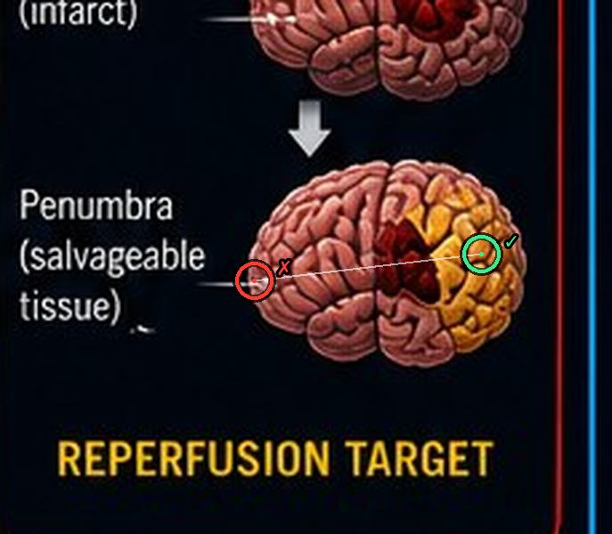
7
✗ ERASE (890,730)
the plain pink LEFT hemisphere
✓ DRAW AT (975,720)
the gold rim on the opposite side of the icon
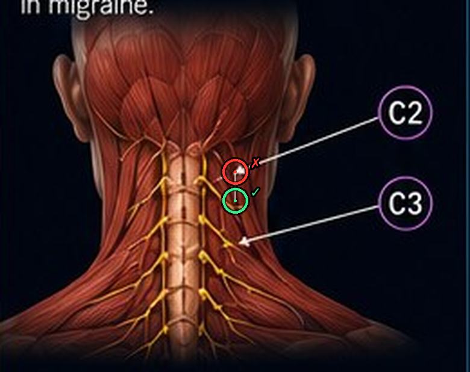
8
✗ ERASE (150,1264)
red posterior neck muscle, 16 px above the nerve
✓ DRAW AT (150,1280)
the yellow C2 ramus
The C3 arrow just below is correct and shows the intended form.
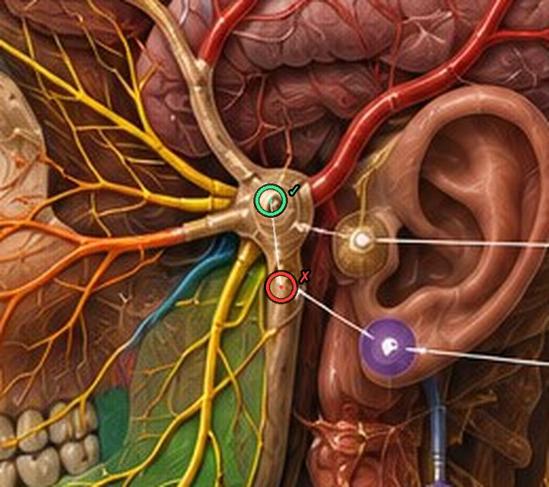
9
✗ ERASE (453,589)
the beige nerve trunk below the ganglion
✓ DRAW AT (448,548)
the ringed ganglion hub where V1/V2/V3 radiate
The leader currently passes over the purple marker sphere at (487,614) on its way.
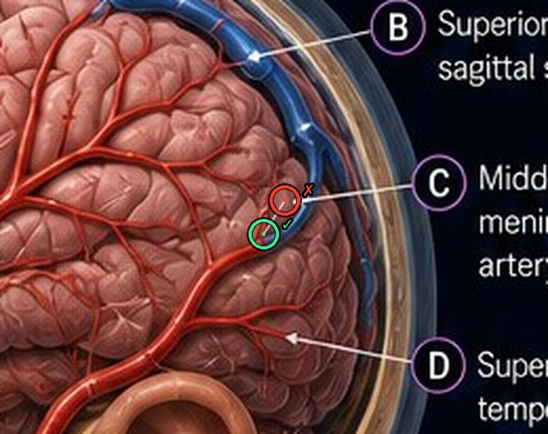
10
✗ ERASE (598,412)
bare cortical gyri — no vessel of any kind under it
✓ DRAW AT (588,428)
the red arterial tree
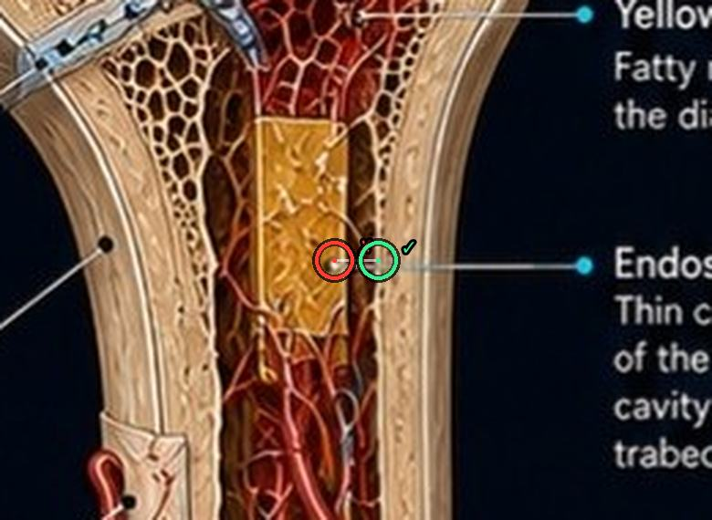
11
✗ ERASE (343,533)
inside the gold yellow-marrow block
✓ DRAW AT (359,533)
the inner surface of the cortical shell
At y=533 the layers are: gold marrow to x 346, dark transition 348–356, cortical shell 358–386.
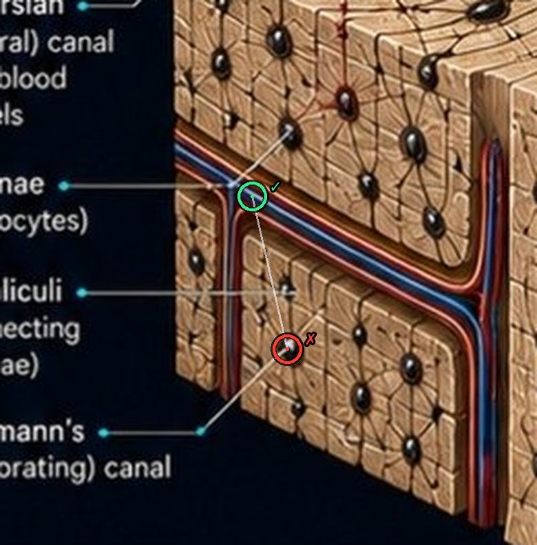
12
✗ ERASE (783,622)
a black almond-shaped osteocyte lacuna
✓ DRAW AT (766,548)
the transverse red/blue vessel pair crossing the cut face
“Lacunae” 110 px above uses the same dogleg on the same kind of target — that one is correct.
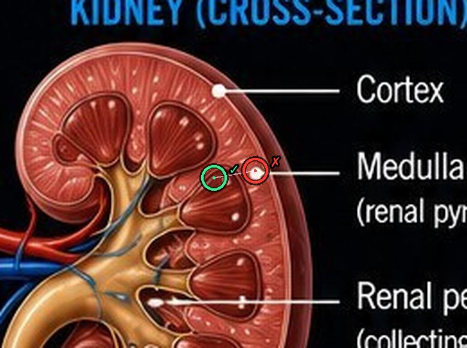
13
✗ ERASE (818,856)
the outer cortical band — the same band “Cortex” marks 51 px above
✓ DRAW AT (795,860)
inside a pyramid, in the striated tissue
The cortical band here is only 16 px wide, so the dot was placed carefully in the wrong layer.
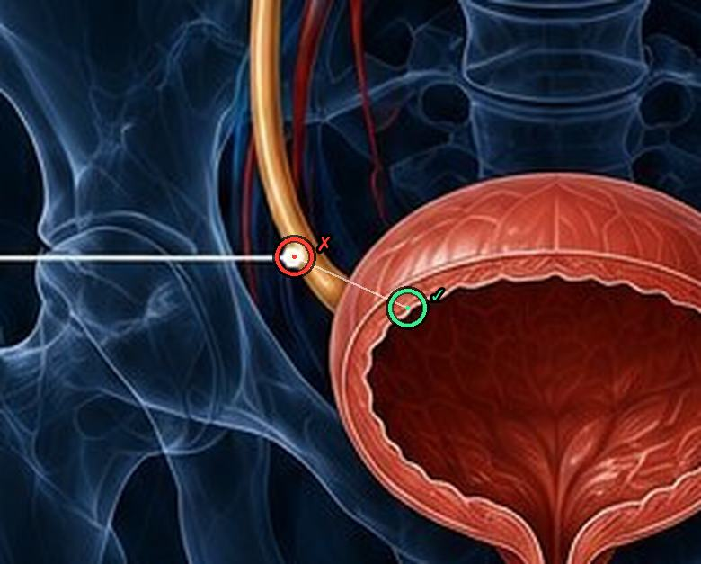
14
✗ ERASE (278,871)
the tan distal ureter
✓ DRAW AT (320,890)
inside the red bladder
A 20 px miss between the two structures the page is about.
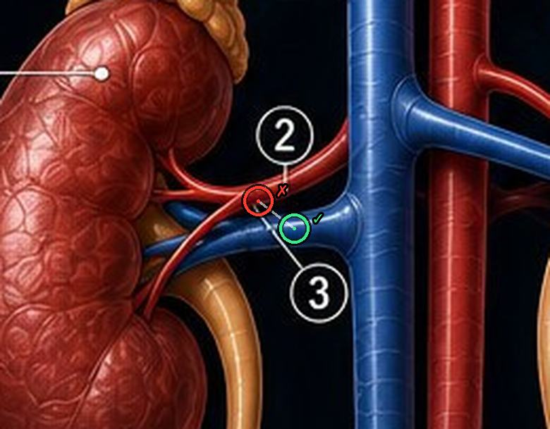
15
✗ ERASE (413,413)
the red artery’s lower edge — the vessel ② already names
✓ DRAW AT (430,426)
the blue renal vein, 12 px below
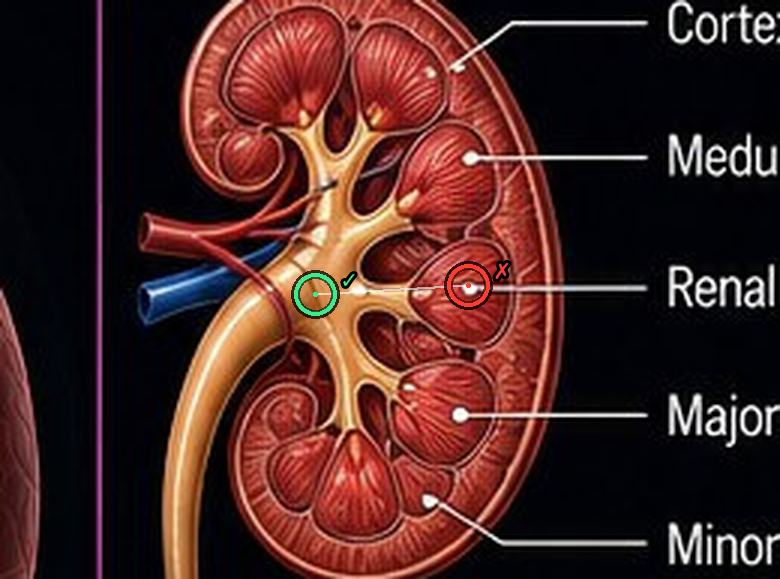
16
✗ ERASE (844,347)
a red medullary pyramid
✓ DRAW AT (793,350)
the tan funnel of the collecting system
Three of five labels in this panel point at pyramids. Fix all three together.
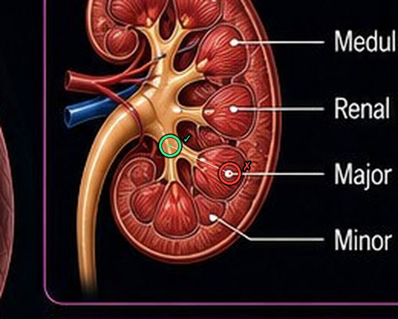
17
✗ ERASE (842,390)
a red medullary pyramid
✓ DRAW AT (803,372)
a tan branch of the pelvis
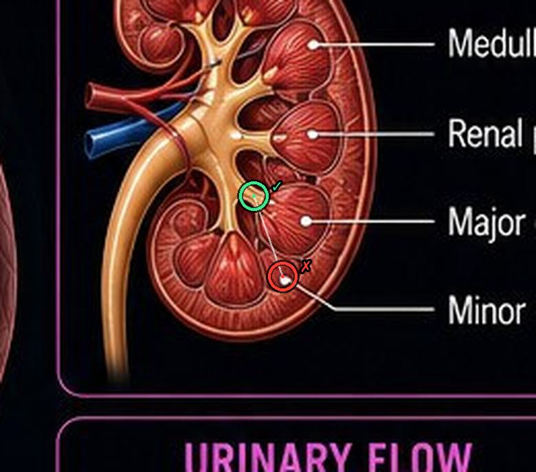
18
✗ ERASE (830,417)
the base of a third red pyramid
✓ DRAW AT (816,378)
a small tan cup around a papilla
The gold branches stop at about y 400 — nothing below that is collecting system.
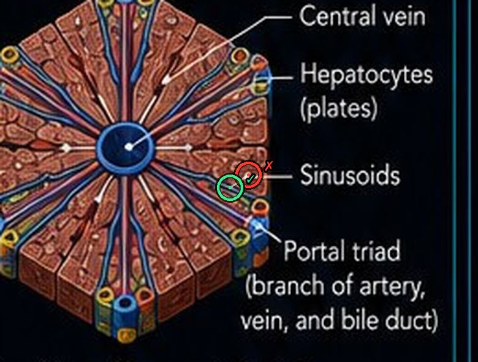
19
✗ ERASE (413,941)
inside a salmon hepatocyte plate block
✓ DRAW AT (403,948)
the blue radial channel between plates
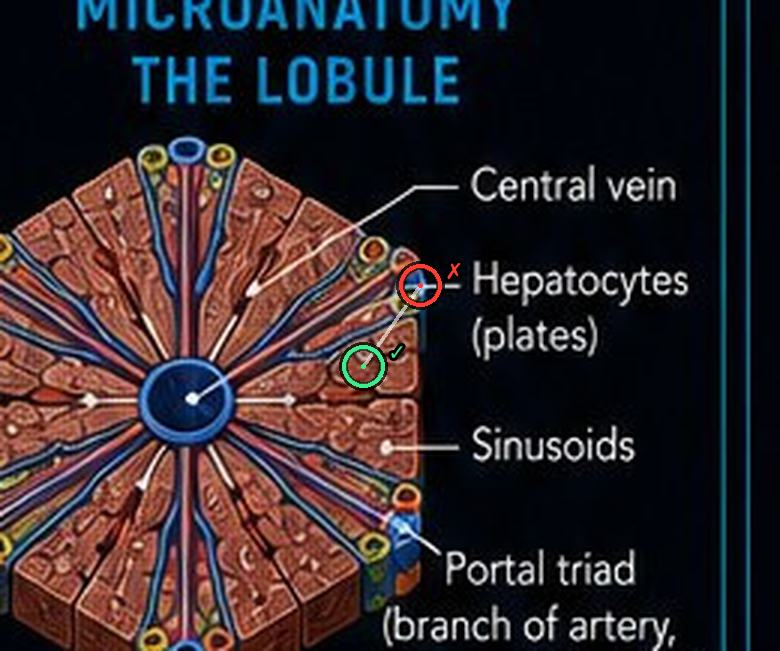
20
✗ ERASE (424,888)
the blue portal venule of the triad at the hexagon corner
✓ DRAW AT (405,915)
a salmon plate block
With a19, these two are effectively a swap: hepatocytes points at a vessel, sinusoids at hepatocytes.
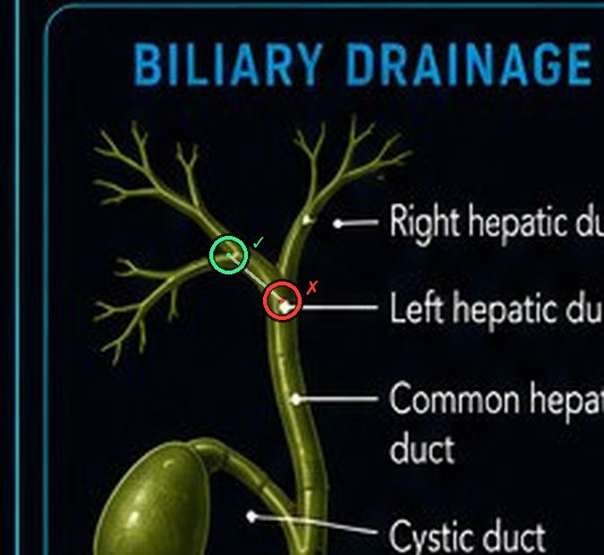
21
✗ ERASE (105,883)
the common hepatic trunk, 11 px below the confluence
✓ DRAW AT (85,866)
the left-going limb of the bifurcation
“Common hepatic duct” points at the same trunk 36 px lower.
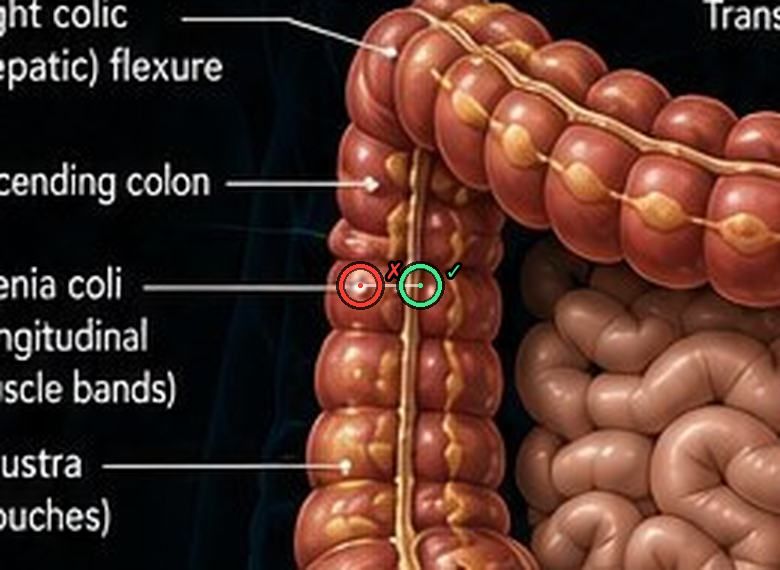
22
✗ ERASE (169,366)
the free lateral haustral wall — what “Haustra” names 58 px below
✓ DRAW AT (189,366)
the tan longitudinal band, 19 px medial
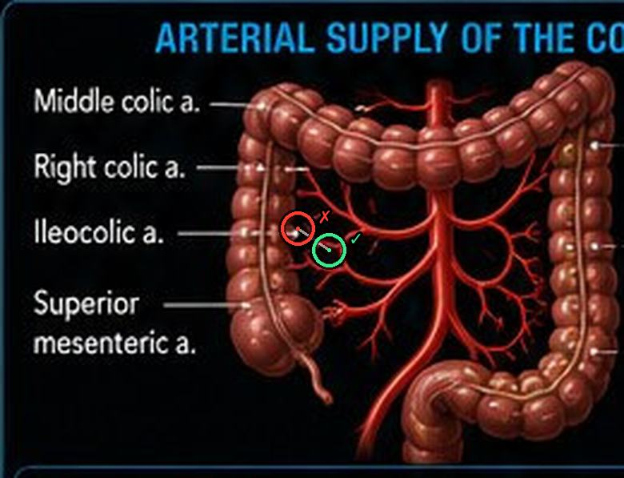
23
✗ ERASE (139,1143)
black background, 13 px short of the arcade
✓ DRAW AT (152,1152)
the arcade branch running to the cecum
Easiest erase on the page — pure black ground.
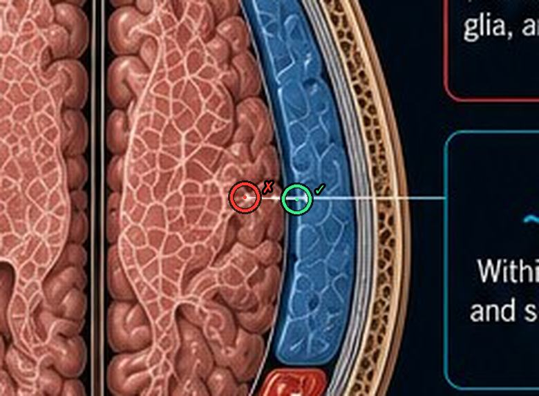
24
✗ ERASE (770,468)
pink brain parenchyma — the arrow crosses the whole blue band and stops 22 px past it
✓ DRAW AT (795,469)
the blue CSF band
At y=469 the boundary is x≈790: pink to 788, blue from 792.
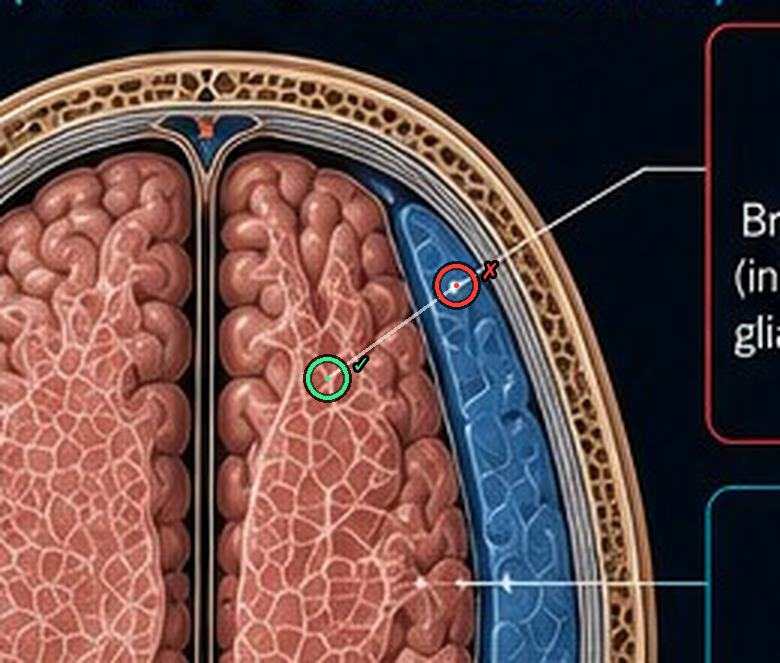
25
✗ ERASE (783,369)
inside the blue CSF band
✓ DRAW AT (740,400)
the pink brain parenchyma
With a24 this is a straight mutual swap on the Monro–Kellie panel.
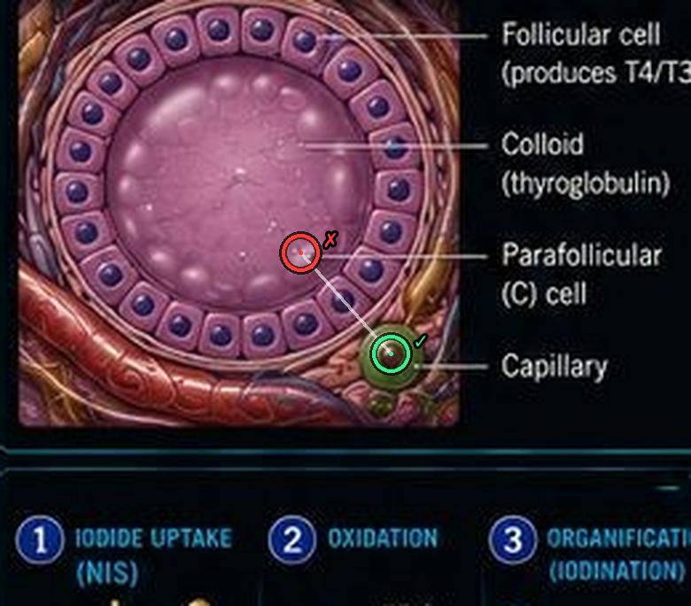
26
✗ ERASE (126,672)
the pale colloid at the follicle centre
✓ DRAW AT (160,710)
the olive-green C cell outside the epithelium
800×1200 page. The panel’s point is that C cells sit OUTSIDE the follicle.
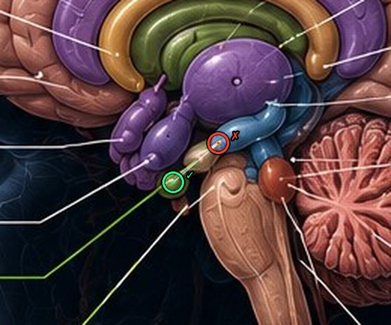
27
✗ ERASE (347,540)
the tan wedge, 33 px past the sphere
✓ DRAW AT (317,566)
the olive-green sphere — the colour of the label’s own ink
The leader passes straight over the green sphere on its way.
28
✗ ERASE (339,455)
the green cingulate band’s midpoint — mid-cingulate, not anterior
✓ DRAW AT (262,470)
the rostral limb of the same band
The band runs x 233–440, so the current dot is its exact midpoint.
29
✗ ERASE (200,507)
mid medial-frontal cortex, 40 px above the orbital surface
✓ DRAW AT (210,545)
the orbital (inferior) surface of the blue frontal lobe
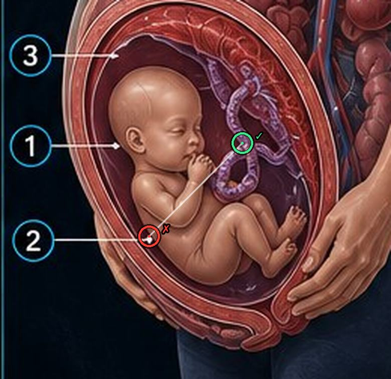
30
✗ ERASE (373,762)
the fetal back / buttock
✓ DRAW AT (435,700)
the purple coiled cord
The cord is the only purple structure in the uterus.
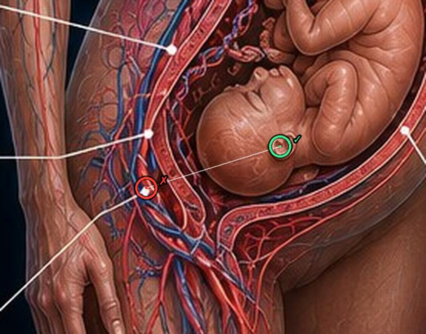
31
✗ ERASE (285,879)
maternal pelvic vessels, outside the uterus
✓ DRAW AT (372,852)
the cord’s insertion at the fetal abdomen
Same job, but the old terminator sits on gyri, folia, trabeculae or bowel wall. Clone stamp with the grain — see the method notes at the front.
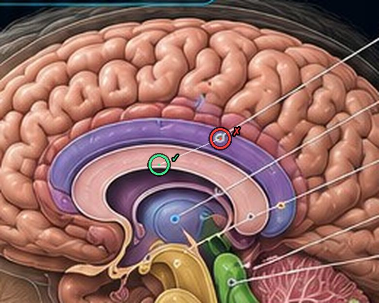
32
✗ ERASE (292,424)
the purple cingulate arc
✓ DRAW AT (250,442)
the salmon callosal band inside it
Rows b01–b03 are a three-way rotation: each label stands on the structure the label above it names.
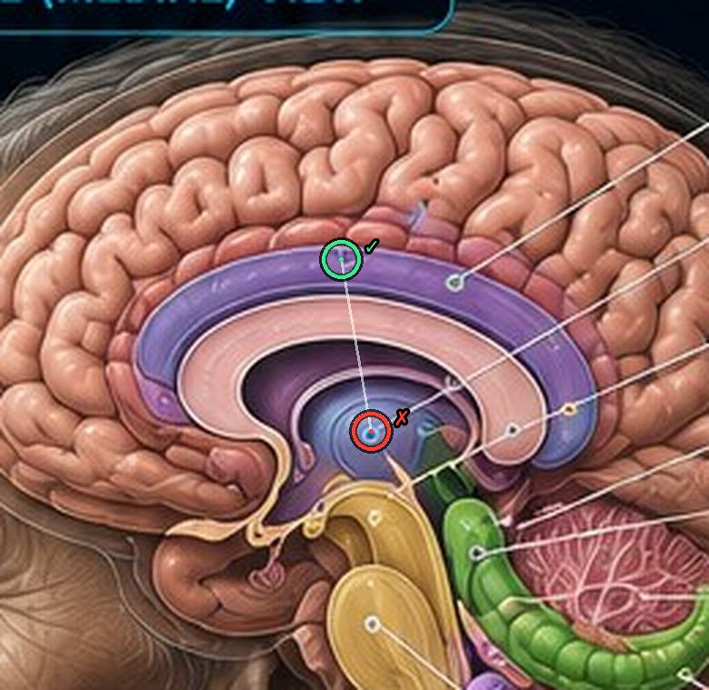
33
✗ ERASE (261,478)
the blue thalamus
✓ DRAW AT (250,415)
the purple arc above the corpus callosum
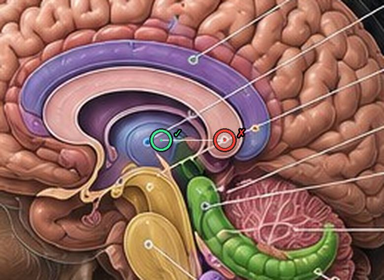
34
✗ ERASE (313,478)
the salmon corpus callosum, posterior third
✓ DRAW AT (270,478)
the blue oval
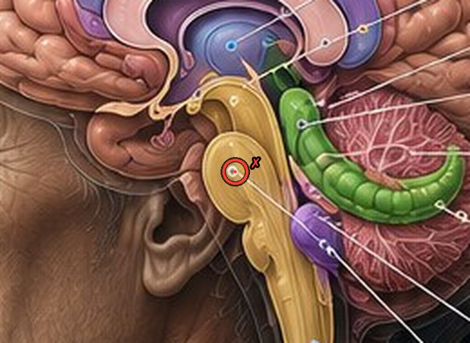
35
✗ ERASE (263,549)
the middle of the gold pons
✓ DRAW AT no coordinate — place from the source
the anterior medial temporal region
No target coordinate — place it from the source. Sampled (202,171,132) at the dot = pons.
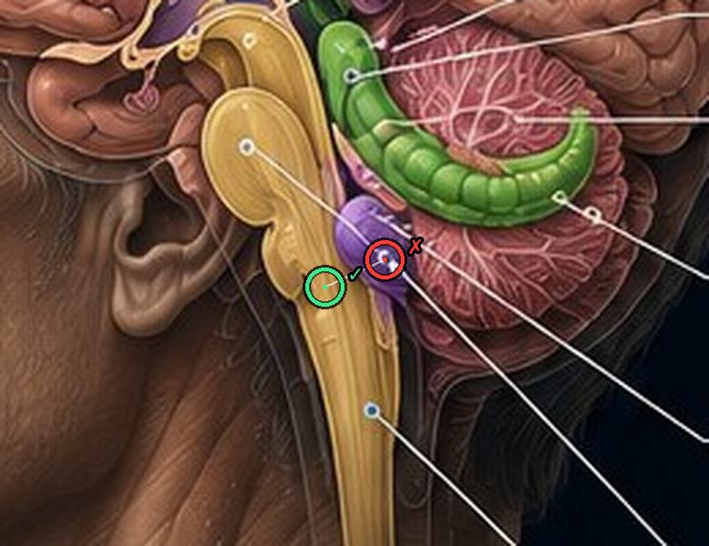
36
✗ ERASE (312,590)
a purple medial-temporal blob behind the brainstem
✓ DRAW AT (290,600)
the gold column
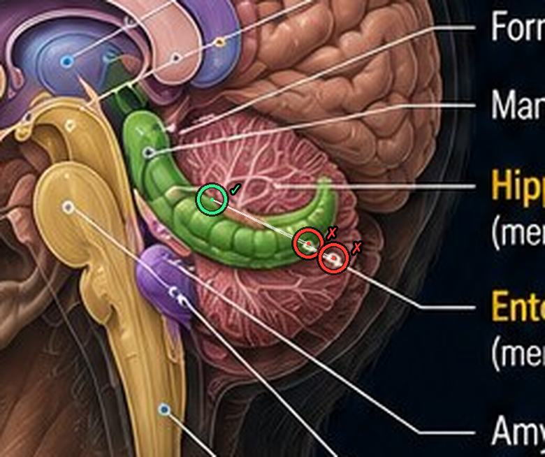
37
✗ ERASE (376,566) and (388,573)
TWO ring terminators straddling the green hippocampus rim and the pink cerebellum
✓ DRAW AT (330,545)
one ring, well inside the green body
Erase both rings. A leader with two endpoints gives the reader two answers.
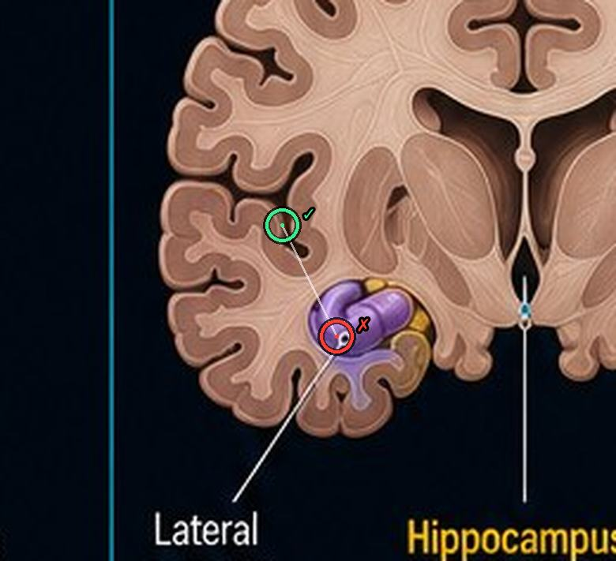
38
✗ ERASE (730,472)
a purple hippocampus
✓ DRAW AT (707,425)
a dark ventricular cavity
On this panel all three labels are wrong — see b07–b09.
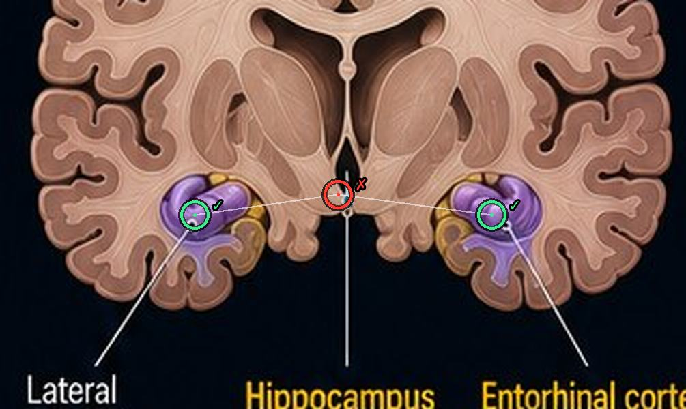
39
✗ ERASE (805,458)
the midline, at third-ventricle level
✓ DRAW AT (735,468) and (880,468)
the two purple bodies, one leader each
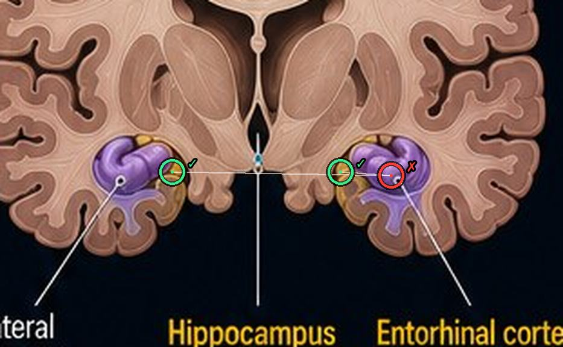
40
✗ ERASE (883,470)
a purple hippocampus
✓ DRAW AT (762,468) and (855,468)
the gold/ochre bands medial and inferior to each hippocampus
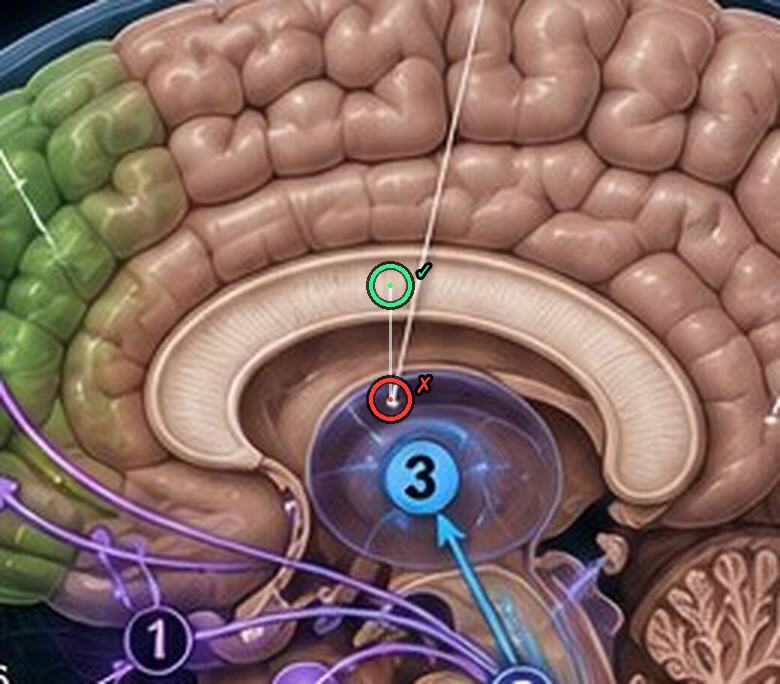
41
✗ ERASE (489,424)
inside the blue thalamic mass
✓ DRAW AT (489,386)
the pale ribbed callosal band, straight up the same leader
The leader already passes through the band on its way down.
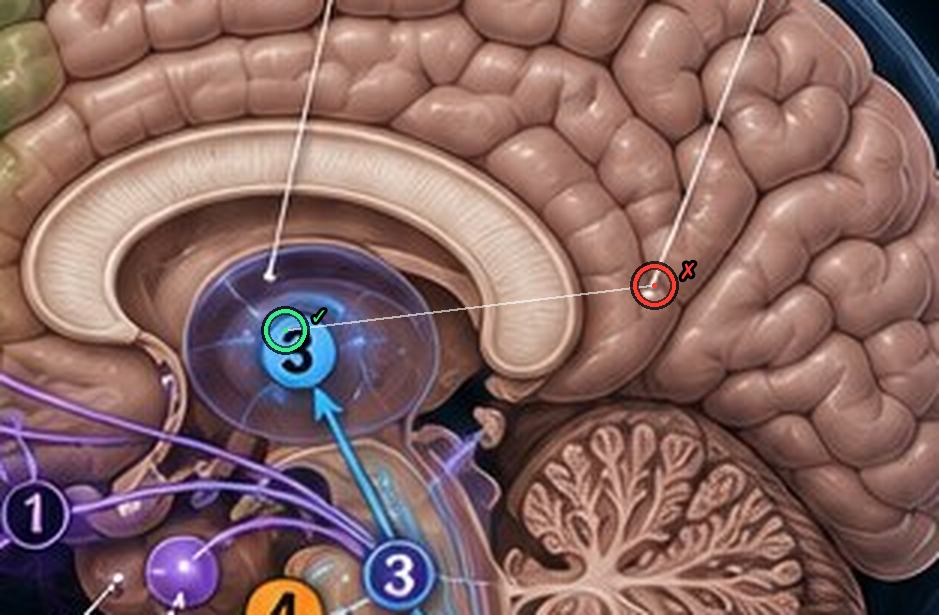
42
✗ ERASE (618,428)
parietal cortex, 124 px from the thalamus
✓ DRAW AT (495,443)
the blue thalamic mass
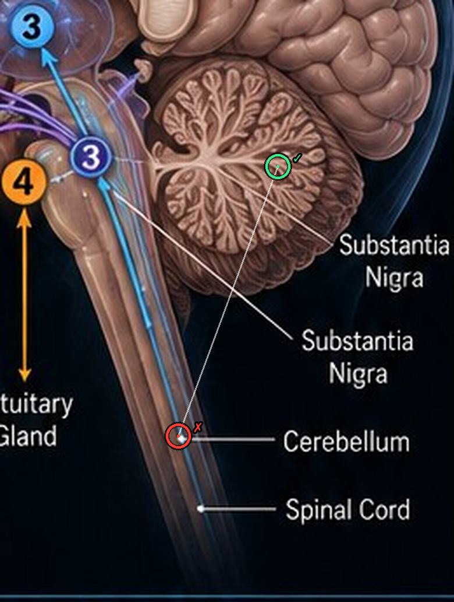
43
✗ ERASE (583,684)
the brainstem / upper cord tube
✓ DRAW AT (640,530)
the foliated cerebellum
“Spinal Cord” correctly points at the same tube 39 px lower.
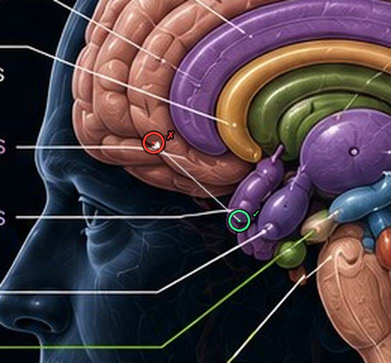
44
✗ ERASE (226,493)
pink frontal cortex — outside every coloured deep-grey structure
✓ DRAW AT (283,545)
the purple lump chain
“Globus pallidus (internal)” at (283,537) is correct and shows the target.
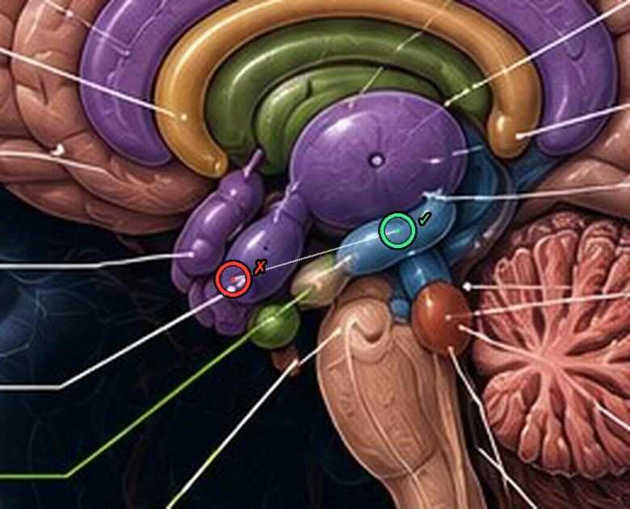
45
✗ ERASE (300,548)
the purple pallidal lumps, 21 px from the GPi dot
✓ DRAW AT (368,528)
the blue body — the key’s thalamus colour
The coronal panel’s key assigns blue to thalamus and purple to pallidum.
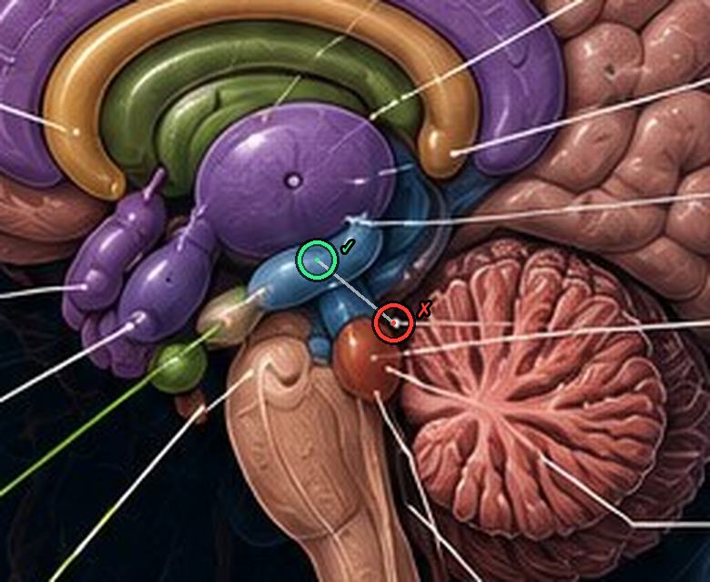
46
✗ ERASE (396,551)
the red nucleus’s upper-right edge
✓ DRAW AT (368,528)
the blue body
Three leaders converge on the red nucleus. Only “Red nucleus” belongs there.
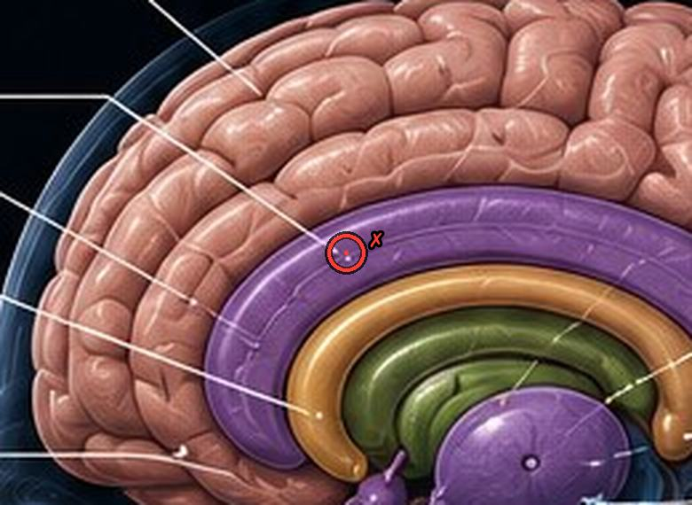
47
✗ ERASE (290,420)
the purple callosal band — where “Corpus callosum” ends 43 px away
✓ DRAW AT no coordinate — place from the source
the pink cortical ribbon immediately outside the arc
About 15 px up and out.
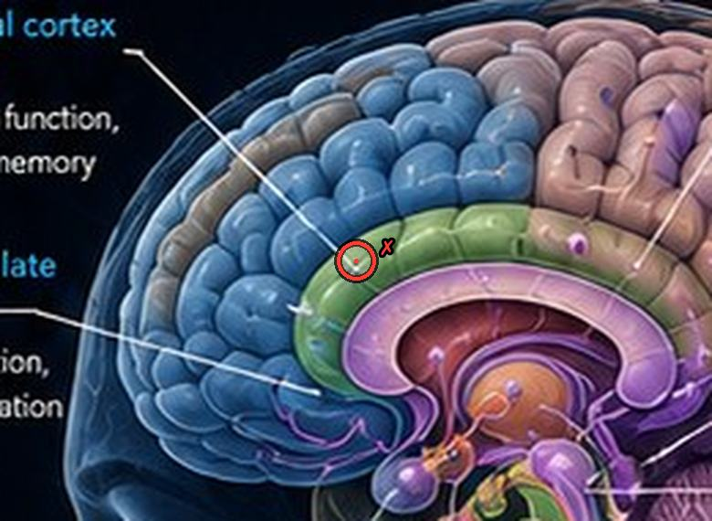
48
✗ ERASE (473,323)
the GREEN cingulate band — the colour the legend assigns to “Cingulate cortex”
✓ DRAW AT no coordinate — place from the source
the blue frontal convexity above and in front of the band
Sampled (152,176,132) at the dot = the green band.
49
✗ ERASE (577,323)
the same band’s posterior/olive end — high and far back
✓ DRAW AT (465,375)
ventral-anterior frontal cortex, low and forward
50
✗ ERASE (461,371)
blue frontal cortex
✓ DRAW AT (473,323)
the green cingulate band — where the DLPFC leader currently ends
b17–b19 are an exchange: two prefrontal labels on the cingulate, the cingulate label on prefrontal cortex.
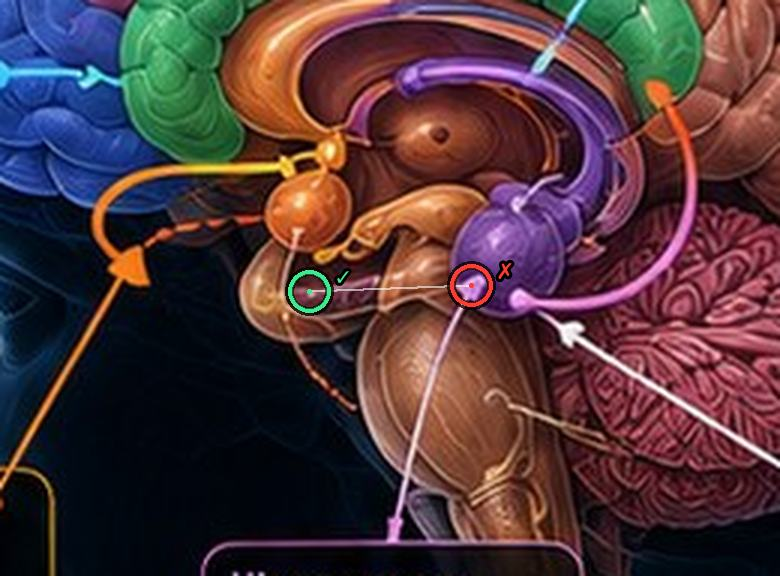
51
✗ ERASE (359,578)
the violet raphe sphere — 33 px from the Raphe Nuclei arrowhead on the same ball
✓ DRAW AT (305,580)
the plum medial-temporal band
Sampled (123,56,73) at the target — distinct from the orange amygdala and the surrounding brown.
52
✗ ERASE (245,571)
empty dark background below the frontal lobe
✓ DRAW AT (305,556)
the orange amygdala sphere
Its leader is the same orange as the circuit arrows, which is why it reads as deliberate.
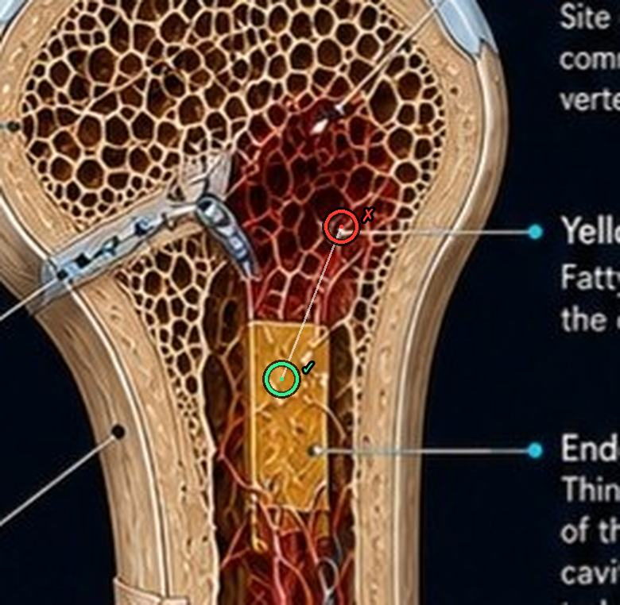
53
✗ ERASE (353,441)
deep red marrow of the metaphysis
✓ DRAW AT (328,505)
the gold fatty-marrow block (x 313–347, y 478–560)
“Red marrow” above it is correct, so these are not swapped — yellow marrow simply stops one structure short.
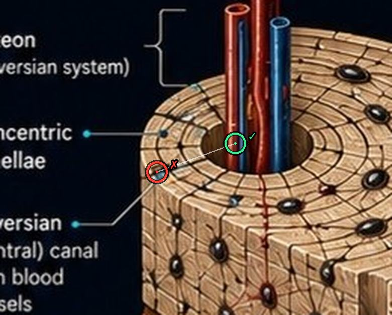
54
✗ ERASE (738,421)
the concentric lamellar rings, 29 px from where “Concentric lamellae” points
✓ DRAW AT (790,402)
inside the dark central opening with the vessels
Aimed at the canal, stops 27 px short.
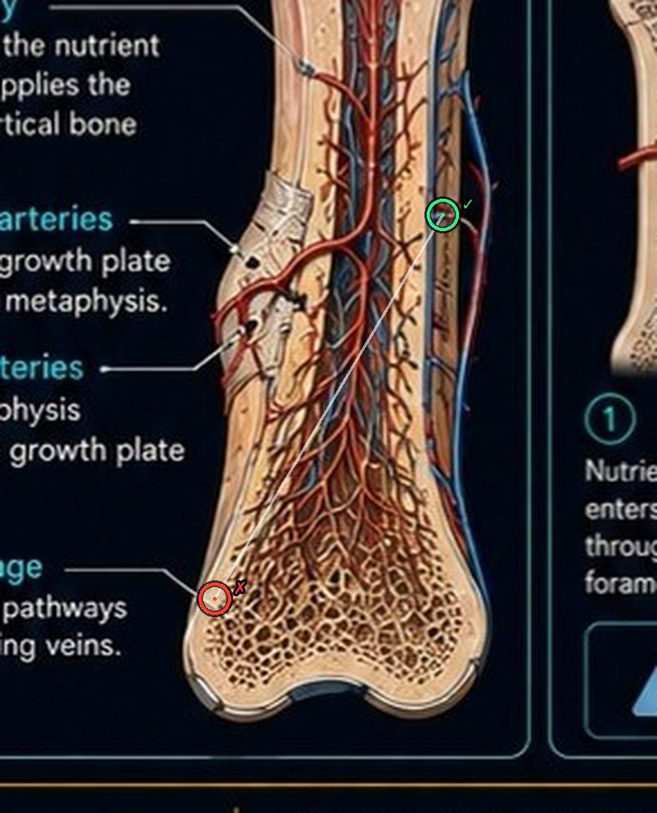
55
✗ ERASE (285,1250)
the distal cortical shell — no vein at the endpoint
✓ DRAW AT (386,1080)
the medullary venous channel
Careful: the bone’s own outline carries a pale blue-grey highlight at x 391–405 that looks like a vein and is not.
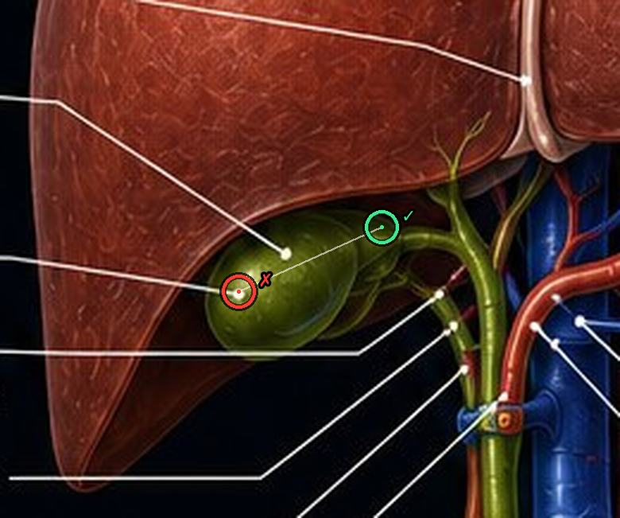
56
✗ ERASE (265,523)
inside the gallbladder sac — where “Gallbladder” points 22 px away
✓ DRAW AT (325,496)
the green tube leaving the sac’s neck
57
✗ ERASE (349,524)
the green tree, but ABOVE the cystic-duct confluence
✓ DRAW AT (366,555)
the green trunk below the junction
Above that junction the tube is the common hepatic duct.
58
✗ ERASE (355,537)
the green bile duct — sampled (90,94,39)
✓ DRAW AT no coordinate — place from the source
the dark maroon arterial twig ~5 px up-right, clear of the duct
59
✗ ERASE (408,535)
the blue IVC — sampled (30,41,84)
✓ DRAW AT (366,545)
the green biliary trunk, 42 px left
60
✗ ERASE (376,567)
the small orange portal-triad widget
✓ DRAW AT (411,567)
the blue IVC trunk, 35 px right
Do this one together with b30 — it is a clean exchange.
61
✗ ERASE (390,537)
the bright red hepatic artery alone — one of the three, not the bundle
✓ DRAW AT (376,567)
the triad widget the IVC label vacates
62
✗ ERASE (821,431)
the blue efferent arteriole / peritubular vessel
✓ DRAW AT (858,431)
the orange-walled tubule, 37 px right
63
✗ ERASE (275,510)
kidney parenchyma — sampled (110,35,34)
✓ DRAW AT (365,500)
the blue renal vein at the hilum, sampled (31,56,117)
64
✗ ERASE (292,437)
a medullary pyramid inside the renal sinus — no vessel at all
✓ DRAW AT (324,429)
the red arterial trunk at the hilum
65
✗ ERASE (198,489)
kidney parenchyma, 59 px below the “Kidney” dot
✓ DRAW AT (295,458)
the red renal artery running from aorta to hilum
66
✗ ERASE (325,572)
the vertical blue IVC
✓ DRAW AT (300,470)
the horizontal renal vein joining the IVC at hilum level
102 px straight up the IVC.
67
✗ ERASE (347,451)
the intact kidney’s outer surface — capsule/cortex, the same tissue ① marks
✓ DRAW AT (533,435)
a striated pyramid in the CUT kidney opposite
The intact kidney has no medulla showing anywhere on it.
68
✗ ERASE (908,632)
the lower bend of the distal convoluted tubule coil
✓ DRAW AT (960,620)
the thick branched collecting duct
Three tan tubes at every level: loop limbs at x 888–894 and 909–913, collecting duct at 952–970.
69
✗ ERASE (444,319)
the oesophageal wall — the same wall ① marks 62 px above
✓ DRAW AT (395,365)
the left-hand crural muscle band, which is drawn and unlabelled
70
✗ ERASE (497,377)
a single point shared with ⑤ GEJ and ⑥ Angle of His — three markers, one spot
✓ DRAW AT (470,340)
the thickened distal oesophageal segment above the junction
⑤ and ⑥ can reasonably share the notch; the LES is a 3–4 cm segment and belongs above it.
71
✗ ERASE (240,1032)
the mid gastric body of the herniated stomach
✓ DRAW AT (195,1000)
the gap between the crura at the neck of the hernia
48 px — more than a third of the panel’s width.
72
✗ ERASE (196,670) and (204,652)
TWO dots, both on the haustrated ascending colon, one on the taenia
✓ DRAW AT (300,720)
one dot on the smooth coiled small-bowel loops
The large bowel is deeply sacculated; the small bowel is smooth and narrower. ILEUM at (194,780) has the same problem.
73
✗ ERASE (322,529)
the mid field of the patient’s RIGHT LUNG
✓ DRAW AT (390,580)
the red ventricular mass
The heart and aorta are both drawn large and centrally and neither is labelled.
74
✗ ERASE (317,597)
the lower field of the same lung, 68 px below the HEART dot
✓ DRAW AT (372,528)
the aortic arch
75
✗ ERASE (452,841)
the uterine wall where it meets the fetal buttock — no maternal vessel within 80 px
✓ DRAW AT (320,930)
the maternal iliac vessel network
76
✗ ERASE (403,674)
a pink alveolar sphere — the structure “Alveolus (air sac)” names
✓ DRAW AT (368,678)
the purple spiculated macrophage
800×1200 page. The macrophage is the only purple object in the inset and 45 px across.
77
✗ ERASE (608,878)
shoulder soft tissue / first rib, lateral to the blue patch
✓ DRAW AT (565,877)
the blue apical recess above the clavicle
800×1200 page.
78
✗ ERASE (597,963)
lung parenchyma above the blue crescent
✓ DRAW AT (597,985)
the blue crescent at the lung base
“Diaphragmatic recess” at (605,1000) is correct and shows the form.
79
✗ ERASE (682,402)
the lateral lung border, mid-zone
✓ DRAW AT (674,438)
the angle where the lung base meets the chest wall
80
✗ ERASE (283,873)
the tan subcutaneous/periosteal band, 30 px above the groove
✓ DRAW AT (270,906)
the blue vein segment in the subcostal groove (x 258–283, y 902–912)
81
✗ ERASE (288,963)
magenta lung, 4 px inside the visceral pleura line
✓ DRAW AT (275,915)
the gold rib band (y 912–919)
“Parietal pleura” and “Visceral pleura” on the same panel are also inside the lung — see the notes.
82
✗ ERASE (447,423)
a sulcus of plain pink, NON-infarcted cortex
✓ DRAW AT (520,410)
the red trunk ascending into the ischemic zone
ALSO recolour this terminator WHITE. It is currently gold — the same amber the figure uses for the penumbra — which is why it reads as artwork.
The leader travels far enough that you are redrawing a stroke, not just a dot. Doable, but slower, and the erase crosses more artwork. Consider handing these to production.
| Page | Label | From | To | Why it is harder |
|---|---|---|---|---|
| parkinsons p2 | Brainstem | (245,726) | (358,600) | 170 px. Old dot is on black — erase is trivial — but the whole leader must be redrawn. |
| parkinsons p2 | Cerebellum | (303,760) | (455,595) | 225 px, same shape. |
| stroke p1 | Middle Cerebral Artery | (447,423) | (520,410) | Also recolour the terminator white — it is currently gold, the same amber the figure uses for the penumbra, which is why it reads as artwork. |
| cdiff p2 | Superior mesenteric a. | (122,1173) | (192,1150) | 70 px across the arcade. |
| cdiff p2 | Superior mesenteric v. | (478,1107) | (544,1120) | 66 px. |
| cdiff p2 | Inferior mesenteric v. | two dots, (481,1143) and (481,1160) | (510,1202) | Two terminators to erase; one to draw. |
| cdiff p2 | Parasympathetic (vagus n.) | (851,1110) | (690,1140) | 160 px across the whole colon frame. |
| cdiff p2 | Portal vein (to liver) | (531,1202) | (545,1088) | Erase is easy — black ground — but the new route runs up the panel. |
| cdiff p2 | Right colic a. | two tips, (122,1117) and (142,1118) | one tip on an arcade branch | Remove the orphan dash. |
| ckd p2 | Afferent / Efferent arteriole | (865,1024) and (872,1063) | (775,970) and (770,1012) | Both leaders cross the whole corpuscle to reach the vascular pole on the far side. |
| seizure p2 | Cortical networks | starts (531,891), arrowhead at (583,891) pointing outward | (555,845), arrowhead inward | Reverse the arrow. Not a move — the head is at the wrong end. |
| seizure p2 | Basal ganglia | (496,452) | (552,452) or (545,478) | Crosses the magenta thalamus. |
| migraine p2 | A — Dura mater | (521.5,306.5) | (470,283) | The dural band is only 6 px thick (y 280–285 at x 470). Precision job. |
| suicide p2 | Raphe / others | — | — | See the per-page sheet; several leaders share one region. |
| hypothyroid p2 | Capillary | (170,712) | (60,715) | 110 px across the follicle. 800×1200 page. |
Nine rows. There is nothing to point at, so no leader move fixes them. These need an illustrator or a decision to drop the label. Full detail in PRODUCTION-artwork-needed.md.
| Page | Label | What is missing | Suggested |
|---|---|---|---|
| stroke p1 | Circle of Willis, Basilar, PCA, ACA | all four — a lateral view cannot show basal vessels | add a basal inset, or drop the four |
| uti p2 | ⑧ Ureterovesical junction | no oblique intramural segment | draw it — the page's own relationships strip shows how |
| parkinsons p2 | Substantia nigra pars reticulata | no SN band in the sagittal panel | copy from the page's own midbrain panel |
| parkinsons p2 | Internal capsule | no white-matter lamina | draw one, or move the label to the coronal panel |
| schizophrenia p2 | Pituitary Gland | no gland or stalk | draw it; the connector arrow is fine as is |
| migraine p2 | D — Superficial temporal artery | no extracranial vessel anywhere | draw the STA in the scalp, or drop the label |
| hepatitis p2 | Coronary ligament | a posterior structure in an anterior view | drop the label — it cannot be drawn here |
| hypothyroid p2 | Hyoid bone | no bone above the thyroid cartilage | drop the label |
| dementia p2 | Fornix | not differentiated from the callosal band | draw it, or fold into "Corpus callosum (fornix beneath)" |
Five. You could add a numbered badge in Photoshop — it is a circle and a digit on flat artwork — but check first whether the number should exist at all.
| Page | Missing marker |
|---|---|
| gerd p2 | ⑦ Stomach (cardia) — the artwork has ① to ⑥ only |
| meningitis p2 | ④ Cerebral aqueduct — no ④ anywhere |
| meningitis p2 | ⑥ Median aperture — no ⑥ anywhere |
| lymphoma p2 | ⑤ Mediastinal Lymph Nodes — the column runs 2,3,4,6,7,8,9 |
| gout p2 | ⑤ Other metatarsals — no ⑤ badge on the foot |
pneumothorax p2, rows 5–8. The four pleural layers on the main figure are four pale lines one or two pixels wide with three-pixel gaps — a terminator on that page is 4 px across, wider than the layer it names. They cannot be verified or drawn unambiguously at 800×1200. Re-export at 1024×1536 first. Same cause blocks four rows on hypothyroid p2 and one on tb p2.
gdm p2, the PLACENTA (ENLARGED) panel. Either the umbilical vessel colours are inverted or the two leaders are on the wrong vessels — opposite fixes, and a render cannot distinguish them. Remember the umbilical circulation reverses the usual convention: the vein carries oxygenated blood and is drawn red.
The placenta on both obstetric pages. On preeclampsia p2 and gdm p2 the PLACENTA label lands on the uterine wall and I could not find a distinct placental disc on either. If it is not drawn, both are artwork rows.
osteoporosis p2, the lateral skeleton. Both legs overlap and I could not be certain which shaft belongs to the near leg. Confirm which bone is which before swapping Tibia and Fibula, and note that on the anterior skeleton both dots are on the slender bone — so that half needs a leader move as well as a text swap.